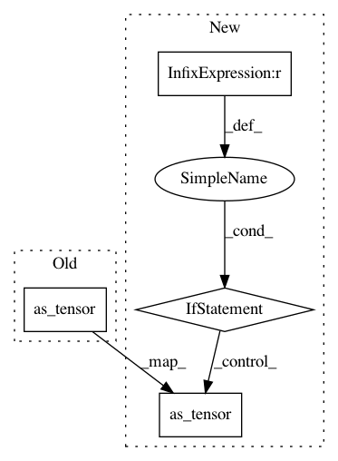

099477277729ba49cf260302b4d7732e64ae3926,torchdiffeq/_impl/rk_common.py,RKAdaptiveStepsizeODESolver,__init__,#RKAdaptiveStepsizeODESolver#Any#Any#Any#Any#Any#Any#Any#Any#Any#Any#Any#Any#,111
Before Change
self.max_num_steps = torch.as_tensor(max_num_steps, dtype=torch.int32, device=device)
grid_points = torch.tensor([], dtype=dtype, device=device) if grid_points is None else grid_points.to(dtype)
self.grid_points = grid_points
self.eps = torch.as_tensor(eps, dtype=dtype, device=device)
self.dtype = dtype
// Copy from class to instance to set device
self.tableau = _ButcherTableau(alpha=self.tableau.alpha.to(device=device, dtype=y0.dtype),
After Change
self.max_num_steps = torch.as_tensor(max_num_steps, dtype=torch.int32, device=device)
grid_points = torch.tensor([], dtype=dtype, device=device) if grid_points is None else grid_points.to(dtype)
self.grid_points = grid_points
self.eps = eps if eps is None else torch.as_tensor(eps, dtype=dtype, device=device)
self.dtype = dtype
// Copy from class to instance to set device
self.tableau = _ButcherTableau(alpha=self.tableau.alpha.to(device=device, dtype=y0.dtype),
In pattern: SUPERPATTERN
Frequency: 3
Non-data size: 4
Instances
Project Name: rtqichen/torchdiffeq
Commit Name: 099477277729ba49cf260302b4d7732e64ae3926
Time: 2020-10-30
Author: rtqichen@gmail.com
File Name: torchdiffeq/_impl/rk_common.py
Class Name: RKAdaptiveStepsizeODESolver
Method Name: __init__
Project Name: Theano/Theano
Commit Name: d9a66a7d08418ae1719358b2e3452f5c1478ca5d
Time: 2016-09-21
Author: gvtulder@gmail.com
File Name: theano/gpuarray/opt_util.py
Class Name:
Method Name: pad_dims
Project Name: Theano/Theano
Commit Name: d9a66a7d08418ae1719358b2e3452f5c1478ca5d
Time: 2016-09-21
Author: gvtulder@gmail.com
File Name: theano/sandbox/cuda/opt_util.py
Class Name:
Method Name: pad_dims